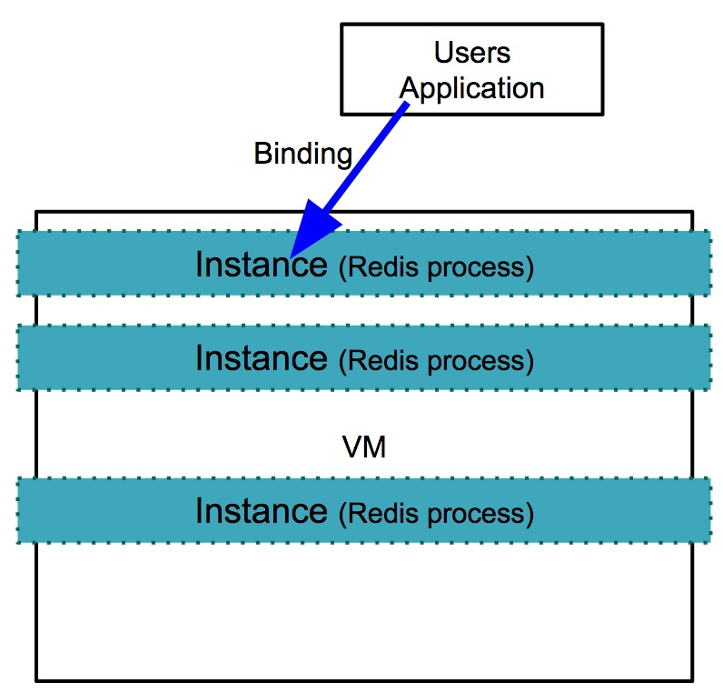
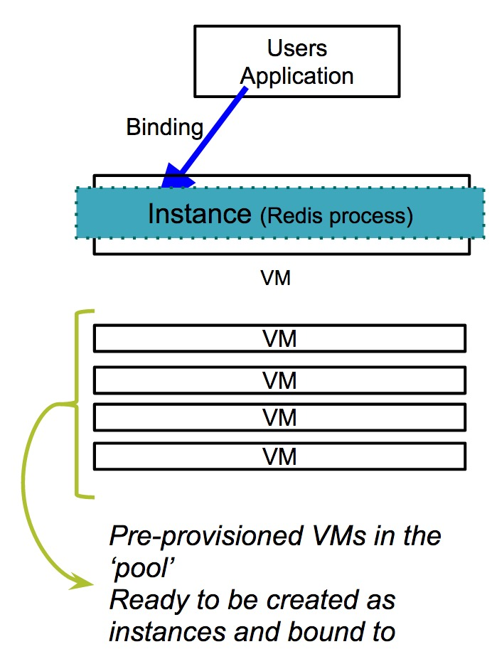

Redis for PCF
Redis Configuration
Redis is configured with a maxmemory-policy of no-eviction. This policy means that the once memory is full, the service will not evict any keys and no write operations will be possible until memory becomes available. Persistence is configured for both RDB and AOF. The default maximum number of connections, maxclients, is set at 10000 but this number is adjusted by Redis according to the number of file handles available. Replication and event notification are not configured.
Service Plan Descriptions
Shared-VM Plan
An instance of this plan provisions a single Redis process on a single shared VM that is suitable for workloads which do not require dedicated hardware.
Data persistence is enabled through the use of RDB and AOF.
Operator Notes
- This plan deploys a shared VM and a single service broker VM.
- This plan can be disabled by setting the
Max instances limiton theShared-VM Plantab in OpsManager to be0. - The maximum number of instances can be increased from the default 5 to a value of your choosing. If you increase the number of instances that can be run on this single VM, you should consider increasing the resources allocated to the VM. In particular RAM and CPU. You can overcommit to a certain extent, but may start to see performance degradations.
- You can also increase the maximum amount of RAM allocated to each Redis process (service instance) that is running on this VM
- If you decrease the service instance limit, any instances that are running where the count is now greater than the limit are not terminated. They are left to be removed naturally, until the total count drops below the new limit you cannot create any new instances. For example if you had a limit of 10 and all were used and reduced this to 8, the two instances will be left running until you terminate them yourself.
Diagram

Known Limitations
Limitations with the current shared-vm plan include:
- It cannot be scaled beyond a single virtual machine.
- The following commands are disabled:
CONFIG,MONITOR,SAVE,BGSAVE,SHUTDOWN,BGREWRITEAOF,SLAVEOF,DEBUG, andSYNC. - Constraining CPU and/or disk usage is not supported.
- The Shared-VM plan does not manage ‘noisy neighbor’ problems so it is not recommended for production apps.
Dedicated-VM Plan
An instance of this plan, provisions a single Redis process, on a single dedicated VM, which is suitable for workloads that require isolation or dedicated hardware.
The following commands are enabled:
MONITORSAVEBGSAVEBGREWRITEAOF
Data persistence is enabled through the use of RDB and AOF.
The maxmemory value for the Redis process is set to be 45% of the RAM for that instance.
The persistent disk should be set to be at least the size of the RAM available to the VM or greater, in order to account for the final and temporary RDB file generated by the Redis background save.
Operator Notes
- This plan deploys several dedicated Redis VMs and a single service broker VM.
- These instances are pre-provisioned during the deployment of the tile from OpsManager into a pool. The VMs are provisioned and configured with a Redis process ready to be used when an instance of the
dedicated-vmplan is requested. - A default deployment will provision
5 instancesof thededicated-vmplan into the pool. This number can be increased on theResource Configtab in Ops Manager, either in the initial deployment, or subsequently thereafter. The number of VMs cannot be decreased once deployed. - When a user provisions an instance, it is marked as in use and taken out of the pool.
- When a user deprovisions an instance, the instance is cleansed of any data and configuration to restore it to a fresh state and placed back into the pool, ready to be used again.
- This plan can be disabled by setting the number of instances of the
Dedicated nodejob in Ops Manager to0.
Diagram

Known Limitations
Limitations with the current dedicated-vm plan include:
- No ability to change the Redis configuration. The
CONFIGcommand is disabled. - Cannot scale down the number of VMs on the plan once deployed.
Highly Available Deployments
Redis for PCF 1.5 does not support configuring multiple availability zones or subnets.
Default Resources
Resource requirements for Redis for PCF
These are the default resource and IP requirements for installing the tile
| Product | Resource | Instances | CPU | Ram | Ephemeral | Persistent | Static IP | Dynamic IP |
|---|---|---|---|---|---|---|---|---|
| Redis | Redis Broker | 1 | 2 | 3072 | 4096 | 9216 | 1 | 0 |
| Redis | Dedicated Node | 5 | 2 | 1024 | 4096 | 4096 | 1 | 0 |
| Redis | Broker Registrar | 1 | 1 | 1024 | 2048 | 0 | 0 | 1 |
| Redis | Broker De-Registrar | 1 | 1 | 1024 | 2048 | 0 | 0 | 1 |
| Redis | Compliation | 2 | 2 | 1024 | 4096 | 0 | 0 | 1 |
Notes:
- The
shared-vmplan is on theRedis Brokerresource - The
dedicated-vmplan is on theDedicated Noderesource
Security
It is recommended that each service run in its own network.
The following ports and ranges are used in this service:
- Destination port 80 access to the service broker from the cloud controllers
- Destination port 6379 access to all dedicated nodes from the Diego Cell and Diego Brain network(s)
- Destination ports 32768 to 61000 on the service broker from the Diego Cell and Diego Brain network(s). This is only required for the shared service plan.
- Outbound access to your chosen blobstore, typically HTTP 80 or HTTPS 443
Application Security Groups
To allow this service to have network access you must create Application Security Groups (ASGs). Ensure your security group allows access to the Redis Service Broker VM and Dedicated VMs configured in your deployment. You can obtain the IP addresses for these VMs in Ops Manager under the Resource Config section for the Redis tile.
Note: Without ASGs, this service will not be usable.
Application Container Network Connections
Application containers that use instances of the Redis service require the following outbound network connections:
| Destination | Ports | Protocol | Reason |
|---|---|---|---|
ASSIGNED_NETWORK |
32768-61000 | tcp | Enable application to access shared vm service instance |
ASSIGNED_NETWORK |
6379 | tcp | Enable application to access dedicated vm service instance |
Create an ASG called redis-app-containers with the above configuration and bind it to the appropriate space or, to give all started apps access, bind to the default-running ASG set and restart your apps. Example:
[
{
"protocol": "tcp",
"destination": "<code>ASSIGNED_NETWORK</code>",
"ports": "6379"
}
]